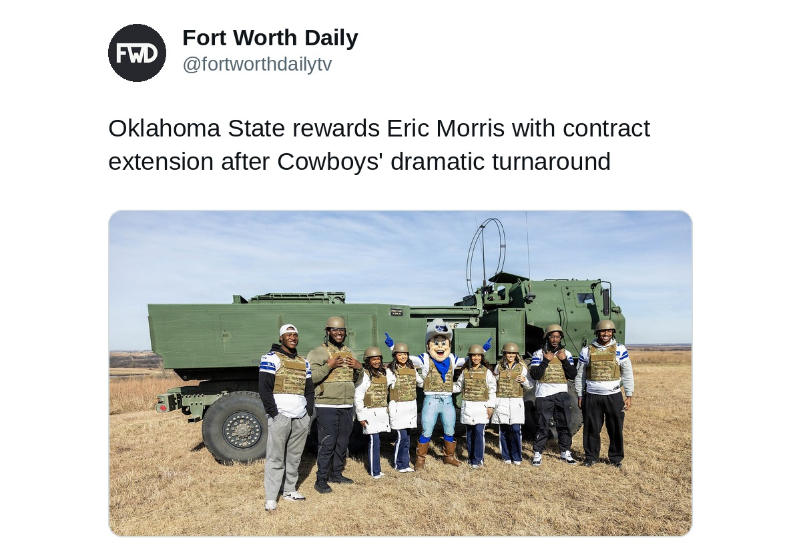

FWD
Fort Worth Daily
Just now · 🌎 · sports · template writer
Just now · 🌎 · sports · template writer
As a reward for that swift turnaround, the Pokes are giving Morris a fresh six-year deal, according to multiple reports. It includes a pay raise and extends his contract for two additional years through 2032, per ESPN.

FWD
story + scoring
{
"source": "CBS Sports",
"kind": "rss",
"score": 0.6149,
"relevance": 2,
"url": "https://www.cbssports.com/college-football/news/eric-morris-oklahoma-state-contract-extension/",
"image_license": "wikimedia-cc",
"image_credit": "Photo: JaoTorey Johnson via Wikimedia Commons (Public domain)"
}